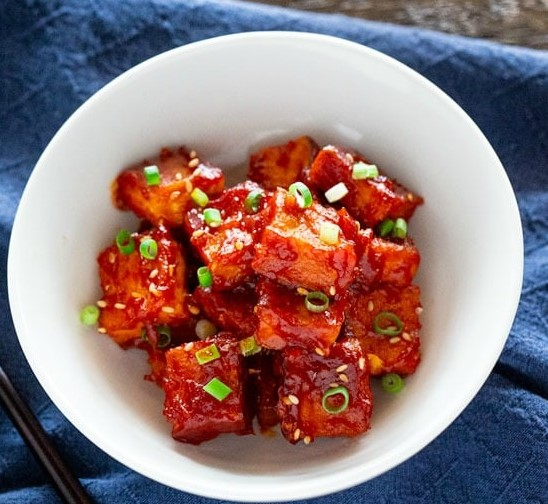

Jjamppong (Korean Spicy Seafood Noodle Soup)
Ingredients
- 50 g summer zucchini (1.8 ounces), thinly sliced
- 2 shiitake mushrooms (50 g / 1.8 ounces), cleaned, stems removed and thinly sliced
- 120 g cabbage (4.3 ounces), thinly shredded
- 35 g brown onion (1.2 ounces), thinly sliced
- 6 mussels (200 g / 7 ounces) or more, cleaned
- 6 littleneck clams (70 g / 2.5 ounces) or more, cleaned
- 6 large prawns (140 g / 5 ounces) or more, head & shells removed and tail left on, cleaned
- 6 squid rings or baby octopus, (70 g / 2.5 ounces)
- 450 g fresh Korean-Chinese style noodles or thin udon noodles or ramen noodles (14 ounces)
- 20 g baby spinach or baby bok choy (0.7 ounces)
CHILI OIL SEASONING
- 3 Tbsp cooking oil , I used rice bran oil
- 3 Tbsp korean chili flakes (gochugaru), can be adjusted to your preferred spice level.
- (3 Tbsp gives only a mildly spicy flavor.)
- 1 tsp minced garlic
- 1 tsp minced ginger
- 20 g green onion – white part (0.7 ounces
SOUP BASE
- 1 Tbsp rice wine
- 2 Tbsp soy sauce , regular (kikkoman)
- 4 3/4 cups Korean soup stock or water
- 1/4 tsp fine sea salt , can be adjusted to your taste
- A few sprinkles ground black pepper
Directions
- Preheat a wok (or large deep pot) on low heat until heated. Add the oil, Korean chili flakes, minced garlic, minced ginger and the green onion and stir constantly for a minute or two. Take care not to burn the chili paste as this can give a bitter taste.
- Turn the heat up to medium and add the zucchini, mushrooms, cabbage, and onion. Cook them until lightly wilted (for 1 to 2 mins). Add the mussels, littleneck clams, prawns and squid (or baby octopus) and stir a bit.
- Add the rice wine, soy sauce and Korean soup stock (or water). Turn the heat up to medium high. Boil the soup covered until all ingredients are cooked through (about 8 mins) while avoiding overcooking. Remove the cover and add the salt and a few sprinkles of ground black pepper. Add the baby spinach just before serving. (If using baby bok choy, you may need to cook a little longer.)
- While the soup is boiling (in step 3), cook the noodles in boiling water following the manufacturer’s instructions. Drain and rinse the noodles briefly in cold water. (Step 3 and 4 should be completed around the same time.)
- Divide the noodles, seafood, and the soup between three soup bowls. Serve immediately. (If you prefer, you can also serve the soup with steamed rice instead of the noodles.)
Go Back!